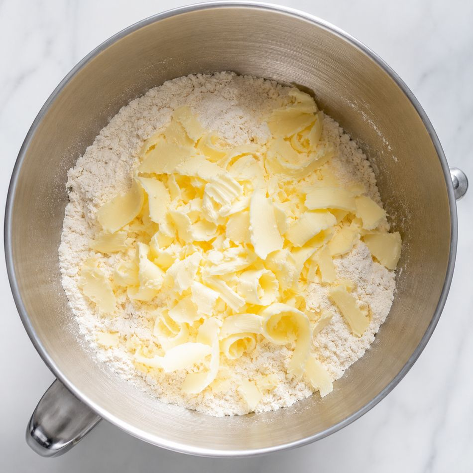
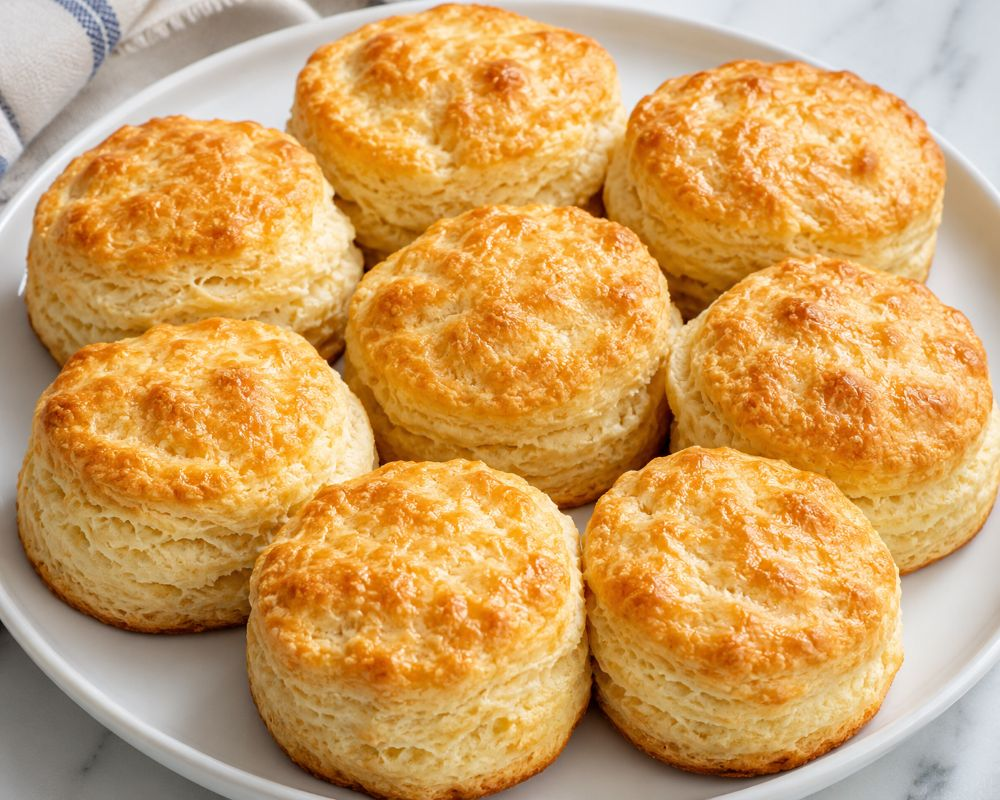

Buttermilk Biscuits with Caputo Chef's Flour
A simple biscuit made especially well: cold butter, cold buttermilk, gentle handling, and a little patience.
Why These Biscuits Work
These are the biscuits I made for Rick's birthday strawberry shortcake. The goal was a biscuit that could stand on its own but still have the tenderness and lift that make a shortcake worth building around.
Caputo Chef's Flour is finely milled and described by its manufacturer as a soft yet strong flour with elastic gluten. Here, it is paired with cold butter, cold buttermilk, baking powder, and a small amount of baking soda. The real trick is not complicated: keep the ingredients cold, handle the dough gently, and stop working it as soon as it comes together.
Ingredients
For the Biscuits
- 2 cups Caputo Chef's Flour
- 1 tablespoon baking powder
- ½ teaspoon baking soda
- 1 teaspoon salt
- 1 tablespoon granulated sugar
- 6 tablespoons cold unsalted butter, cubed or grated
- ¾ cup cold buttermilk
Method
1. Prepare the Oven
- Preheat the oven to 425°F (220°C).
- Line a baking sheet with parchment if desired. An ungreased baking sheet also works.
2. Mix the Dry Ingredients
- In a large bowl, whisk together the flour, baking powder, baking soda, salt, and sugar.
3. Cut in the Butter
- Add the cold butter. Using a pastry cutter, fork, or your fingers, work it into the flour until the mixture resembles coarse crumbs, with some pea-sized pieces of butter remaining.

4. Add the Buttermilk
- Make a well in the center and pour in the cold buttermilk.
- Stir gently with a fork or spatula just until the dough comes together. It should look soft and slightly shaggy—not smooth.
5. Fold and Shape
- Turn the dough out onto a lightly floured surface.
- Fold and knead the dough gently 5–6 times only. The goal is to bring the dough together, not to work it like bread dough.
- Pat the dough into a round about ¾ inch thick.
- Cut the biscuits with a floured cutter, pressing straight down without twisting.
6. Bake
- Arrange the biscuits on an ungreased or parchment-lined baking sheet.
- Bake for 12–15 minutes, watching closely toward the end.
- They are ready when the tops are golden brown and the biscuits are baked through.

Notes for Better Biscuits
Keep Everything Cold
Keep the butter and buttermilk cold right up until you bake. Cold butter helps create the layered, flaky character we want, while keeping the dough cool gives you more room to work without turning the butter into a paste.
Don't Chase a Smooth Dough
A shaggy dough is a good thing. Once the buttermilk has hydrated the flour and the dry bits have mostly disappeared, stop. Overworking the dough can make the finished biscuits tougher.
Cut Straight Down
When using a biscuit cutter, press straight down rather than twisting. A clean cut gives the dough a better chance to rise evenly.
If the Dough Seems Dry
If the dough will not come together, add a little more cold buttermilk—about a tablespoon at a time. Flour and humidity vary from kitchen to kitchen, so use the dough itself as your guide.
For Strawberry Shortcake
Let the biscuits cool just enough to handle, then split them and layer with fresh strawberries and whipped cream. These biscuits are deliberately only lightly sweetened, so the berries and cream get to do the talking.
Making the strawberry shortcake?
Read the story behind Rick's birthday strawberry shortcake →